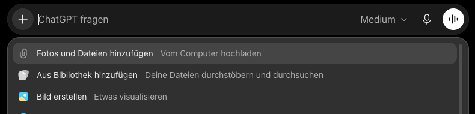
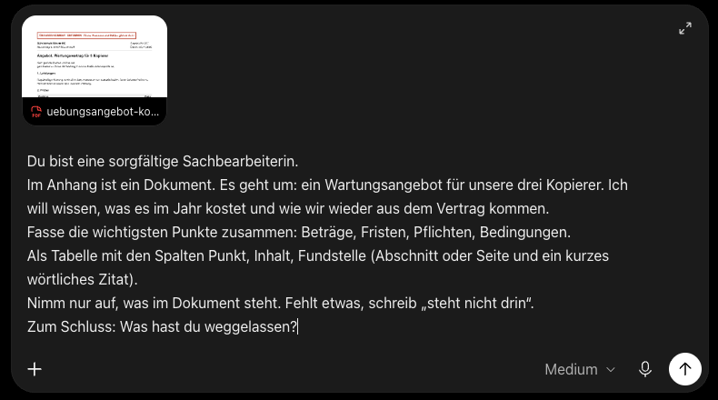
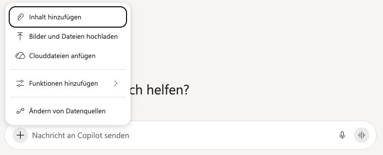
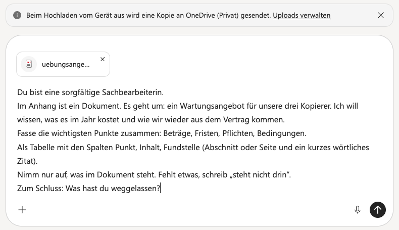
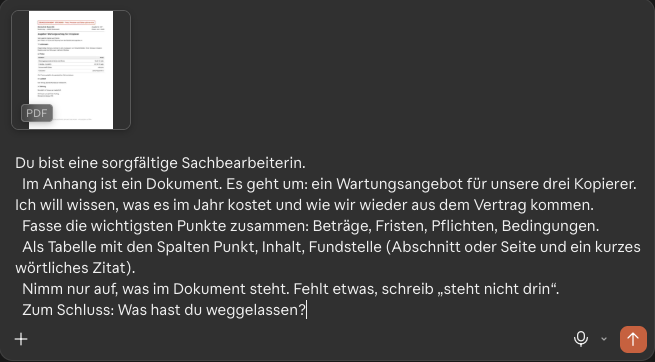

Ein Dokument hineingeben und die Antwort prüfen
Danach kannst du ein Dokument an einen KI-Chat geben, eine Zusammenfassung mit Fundstellen verlangen und die Antwort am Original prüfen.
Etappe 2 · Mit Absicht fragen- 1Eine Anfrage aus fünf Bausteinen
- 2Ein Dokument hineingeben und die Antwort prüfen
- 3In Runden verbessern
So geht es, in drei Schritten
- Im JobNur mit dem Konto, das deine Firma bereitstellt, und nur, wenn sie das Werkzeug freigegeben hat. Ein Gratiskonto, das du mit deiner Firmenadresse anlegst, zählt nicht: Das ist ein Privatkonto. Welches Konto und welche Werkzeuge freigegeben sind, sagt dir die IT oder das Intranet. Im Zweifel nichts Echtes hochladen, sondern beschreiben.
- Privat, VereinNichts mit Namen, Adressen, Kontonummern oder Gesundheitsdaten. Steht so etwas drin, lass es beim Abtippen weg oder ersetze es durch XXX. Ersetze auch Details, an denen man die Person erkennen kann, etwa eine seltene Funktion oder ein Datum.
- Zum ÜbenDas erfundene Übungsangebot auf dieser Seite.
1Ein Beispiel
Sabine aus dem Einkauf vergleicht Angebote für Bürostühle. (Erfunden.)
Sitzwerk Muster GmbH · Angebot über 40 Bürostühle
- Preis
- 8.400,00 € netto, zzgl. 19 % USt. = 9.996,00 € brutto *
- Lieferzeit
- 6 Wochen nach Auftrag
- Zahlungsziel
- 30 Tage, 2 % Skonto bei Zahlung in 10 Tagen
- Gewährleistung
- 24 Monate
* Preis gilt nur bei Lieferung der Gesamtmenge auf einmal. Teillieferungen kosten 4 % Aufschlag.
Netto heißt ohne Mehrwertsteuer, brutto mit. Skonto ist ein Nachlass für schnelles Zahlen.
Sabine fragt mit den fünf Bausteinen aus Einheit 1: „Fasse die Konditionen zusammen, als Tabelle.“ Die Lage dazu: „Wir vergleichen drei Angebote.“
Die Antwort der KI
| Punkt | Wert |
|---|---|
| Preis | 9.996,00 € netto |
| Lieferzeit | 6 Wochen |
| Zahlung | 30 Tage, 2 % Skonto in 10 Tagen |
| Gewährleistung | 24 Monate |
Klingt vollständig. Aber die 9.996 € sind der Bruttopreis, ausgegeben als netto, und der Aufschlag für Teillieferungen fehlt.
So sieht eine gute Antwort aus
So antwortet die KI, wenn die Anfrage Fundstellen und das Weggelassene verlangt, wie die Anfrage unten unter „Selbst ausprobieren“:
| Punkt | Inhalt | Fundstelle |
|---|---|---|
| Preis | 8.400,00 € netto, 9.996,00 € brutto | Zeile Preis: 8.400,00 € netto, zzgl. 19 % USt. = 9.996,00 € brutto |
| Bedingung | Preis nur bei Lieferung auf einmal, sonst 4 % Aufschlag | Fußnote: Preis gilt nur bei Lieferung der Gesamtmenge auf einmal. Teillieferungen kosten 4 % Aufschlag. |
| Gültigkeit des Angebots | steht nicht drin | keine |
Weggelassen: Firmenname, Angebotsnummer, Stückzahl. (Gekürzt: Lieferzeit, Zahlung und Gewährleistung stehen ebenso mit Zitat da.)
Jede Zahl hat ein Zitat, Fehlendes heißt „steht nicht drin“, das Weggelassene steht am Ende. Prüfen musst du trotzdem, aber schneller.
2Selbst ausprobieren
Jetzt ein neues Dokument: ein erfundenes Wartungsangebot für drei Kopierer, zwei Seiten als PDF. Auf Seite 2 steht das Kleingedruckte.
Erstens: die Übungsdatei speichern
- Am Rechner: PDF öffnen, Pfeil nach unten oder „Speichern“. Die Datei liegt dann in Downloads, dort wählst du sie beim Anhängen.
- Am iPhone: Teilen-Symbol (Quadrat mit Pfeil nach oben), „In Dateien sichern“. Beim Anhängen: „Dateien“, dann „Zuletzt“.
- Am Android-Handy: „Herunterladen“ (Pfeil nach unten). Beim Anhängen: „Dateien“, dann „Downloads“.
Klappt es nicht, nimm den Text unter „Anhängen klappt nicht?“.
Zweitens: die Datei anhängen
Wähle dein Werkzeug: Tippe auf den Namen, den du benutzt. Die Anleitung darunter wechselt.
Klicke auf das Plus links im Eingabefeld, dann auf „Fotos und Dateien hinzufügen“, und wähle die Datei.


Im Job mit dem Arbeitskonto, privat mit dem Microsoft-Konto. Klicke auf das Plus links im Eingabefeld, dann auf „Bilder und Dateien hochladen“, und wähle die Datei.
Microsoft Copilot (privat) und Microsoft 365 Copilot (über die Firma) sind zwei Angebote mit ähnlicher Oberfläche.


Mit privatem Konto zeigt Copilot: „Beim Hochladen vom Gerät aus wird eine Kopie an OneDrive (Privat) gesendet.“ Lade also nur hoch, was dort liegen darf.
Welche Dateien gehen?
Mit dem Arbeitskonto liest Copilot laut Microsoft unter anderem .docx, .doc, .pdf, .txt, .rtf, .md, .xlsx, .xls, .csv, .pptx sowie E-Mail-Dateien .eml und .msg. Liste bei Microsoft
Klicke auf das Plus-Symbol neben dem Eingabefeld und wähle die Datei aus.
Am 10.11.2026 in der App getestet: Plus antippen, Datei wählen.

Klicke auf das Plus unten links im Eingabefeld, dann auf „Dateien hochladen oder hinzufügen“, und wähle die Datei. Du kannst sie auch ins Eingabefeld ziehen.

Am 11.11.2026 selbst ausprobiert (Privatkonto).
Am Handy: Plus- oder Büroklammer-Symbol, dahinter „Dateien“. Fotografierst du ein Papier, rechne besonders sorgfältig nach: Auf Fotos werden Ziffern leicht falsch gelesen.
Stand: November 2026. Perplexity und Le Chat funktionieren vermutlich ähnlich (nicht selbst nachgeprüft).
Drittens: diese Anfrage einfügen und abschicken
Du bist eine sorgfältige Sachbearbeiterin. Im Anhang ist ein Dokument. Es geht um: ein Wartungsangebot für unsere drei Kopierer. Ich will wissen, was es im Jahr kostet und wie wir wieder aus dem Vertrag kommen. Fasse die wichtigsten Punkte zusammen: Beträge, Fristen, Pflichten, Bedingungen. Als Tabelle mit den Spalten Punkt, Inhalt, Fundstelle (Abschnitt oder Seite und ein kurzes wörtliches Zitat). Nimm nur auf, was im Dokument steht. Fehlt etwas, schreib „steht nicht drin“. Zum Schluss: Was hast du weggelassen?
Fundstelle heißt: wo genau es im Dokument steht. Bei einem eigenen Dokument ersetzt du alles nach „Es geht um:“ bis zum Zeilenende durch deinen eigenen Satz.
Anhängen klappt nicht? Text zum Einfügen
Übungsdokument (erfunden) · Bürotechnik Muster KG · Angebot Nr. 207 Wartungsvertrag für 3 Kopierer 1. Leistungen: Wartung zweimal im Jahr, Verschleißteile, Toner Schwarz inklusive. Reaktion bei Störungen: nächster Werktag. 2. Preise: 49,00 € netto je Gerät und Monat, 3 Geräte 147,00 € netto monatlich. Schwarzweiß-Seiten inklusive. Farbseiten siehe Abschnitt 5. Alle Preise zzgl. Mehrwertsteuer. 3. Laufzeit: 36 Monate ab Unterschrift. 4. Zahlung: monatlich im Voraus per Lastschrift. 5. Besondere Bedingungen 5.1 Farbseiten 0,09 € netto je Seite, vierteljährlich abgerechnet. 5.2 Der Vertrag verlängert sich automatisch um jeweils 12 Monate, wenn er nicht spätestens 3 Monate vor Ablauf schriftlich gekündigt wird. 5.3 Die Wartungspauschale darf einmal jährlich um bis zu 5 % angepasst werden. 5.4 Einsätze außerhalb der Geschäftszeiten (Mo bis Fr, 8 bis 17 Uhr): 85,00 € netto je Einsatz. 5.5 Es gelten unsere Allgemeinen Geschäftsbedingungen.
Eine Tabelle mit Fundstellen und eine Liste des Weggelassenen. Prüf mit den drei Handgriffen, ob die vier entscheidenden Punkte 5.1 bis 5.4 drinstehen.
Im Test am 10.11.2026 fanden ChatGPT, Copilot und Gemini die Punkte 5.1 bis 5.4. Zwei ließen aber „Schwarzweiß-Seiten inklusive“ ohne Hinweis weg, und Gemini schrieb nie „steht nicht drin“. Claude fand am 11.11.2026 alle Punkte, nannte „Schwarzweiß-Seiten inklusive“ und schrieb „steht nicht drin“, wo etwas fehlte. Ein Durchlauf je Werkzeug, kein Vergleichstest.
Das geht auch mit der Hallenmiete im Verein oder deinem Stromvertrag, Namen und Kontonummern vorher entfernen.
3Prüfen: drei Handgriffe
- Drei Zahlen nachsehen, samt dem, was dabeisteht (netto oder brutto, Wochen, Monate). Schlag drei Beträge, Fristen oder Mengen aus der Antwort im Dokument nach. Hat die KI etwas ausgerechnet, etwa eine Jahressumme, rechne selbst nach. Keine Zahlen drin? Dann drei Fakten: Termine, Namen, Zusagen.
- Nach Auslassungen fragen. Die Antwort auf „Was hast du weggelassen?“ ist ein Hinweis, kein Beweis, denn die KI kann sich auch Auslassungen ausdenken. Überflieg das Kleingedruckte deshalb selbst.
- Bei Abweichung die Fundstelle verlangen. Schreib: „Zeig mir die Stelle im Dokument, wörtlich.“ Gibt es sie nicht, gilt der Punkt nicht.
Woher wir das wissen
Ein öffentlicher Vergleich lässt KI-Modelle Texte zusammenfassen und zählt, wie oft sie etwas behaupten, das nicht im Text steht: bei den getesteten aktuellen Modellen etwa 2 bis 14 von 100 Zusammenfassungen, je nach Modell, also KI-Version (Vectara-Leaderboard, Stand 22.10.2026). Weglassen misst dieser Vergleich nicht.
4Selbstcheck
Die KI schreibt „Preis: 9.996 €“. Wie klärst du, ob das netto oder brutto ist?
Im Dokument, nicht in der Antwort: 8.400 € netto plus 19 % Mehrwertsteuer ergibt 9.996 € brutto.
Übung: Was hätte die KI beim Kopierer-Angebot nicht weglassen dürfen?
Die vier entscheidenden Punkte 5.1 bis 5.4 auf Seite 2: 0,09 € netto je Farbseite, automatische Verlängerung um 12 Monate (Kündigung spätestens 3 Monate vorher), bis zu 5 % Preiserhöhung im Jahr, 85 € netto je Einsatz außerhalb der Geschäftszeiten. Die Jahreskosten können deshalb deutlich über 12 mal 147 € netto liegen.
Aus Einheit 1: Das Dokument liefert das Material. Welchen Baustein musst du trotzdem selbst schreiben, damit die KI weiß, wozu du es brauchst?
Die Lage: worum es geht und wozu du es brauchst. Das steht in keinem Dokument von selbst.